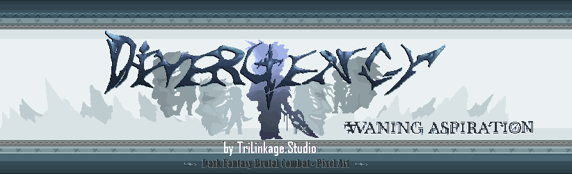
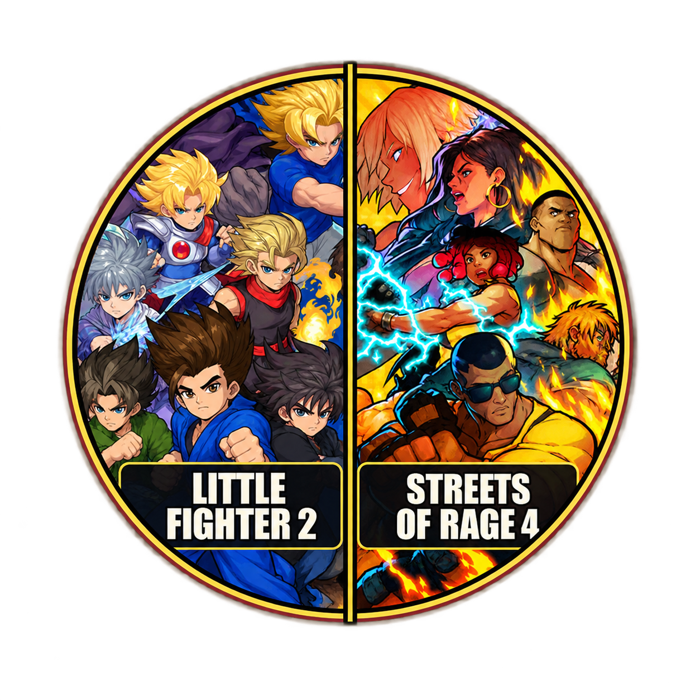
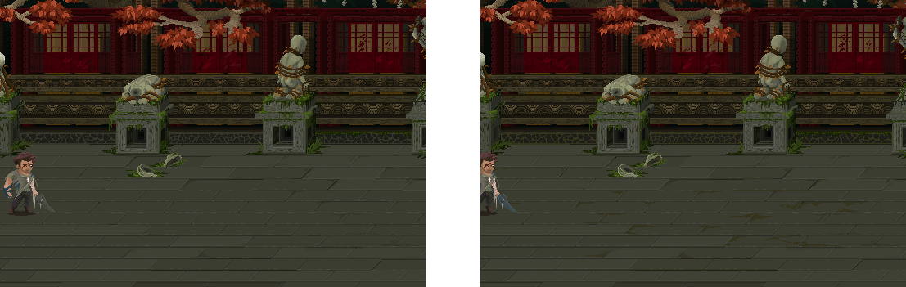
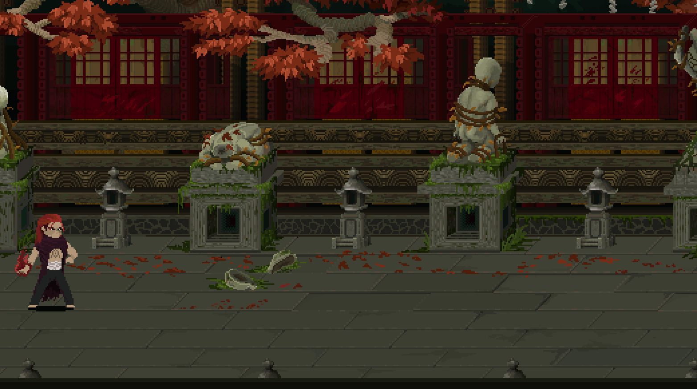
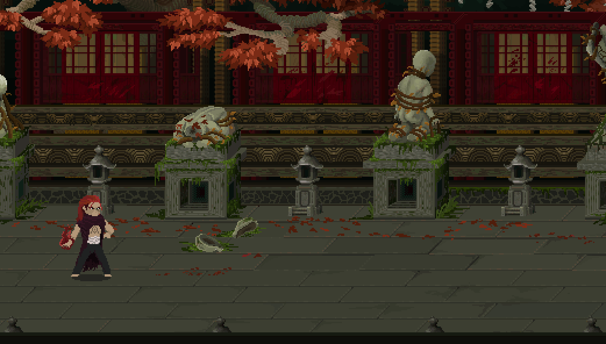

#DIVERGENCY - Waning Aspiration : Dark Fantasy Brutal Combat - Pixel ArtDIVERGENCY - Waning Aspiration : Combat brutal Dark Fantasy - Pixel Art
A fast 2.5D pixel-art brawler where every fight is shaped by your fighter, your skill deck, and your squad commands.Un brawler nerveux en pixel art 2.5D où chaque combat dépend de votre combattant, de votre deck de compétences et de vos ordres d'escouade.
Divergency is built around the feeling of being fast, heavy, and in control. It takes the readable chaos of classic side-scrolling brawlers and adds tactical decisions before and during every mission: which fighter you bring, which skills you equip, where your allies stand, and when you call them in for synchronized assists.Divergency est pensé pour offrir une sensation de vitesse, d'impact lourd et de maîtrise totale. Il reprend le chaos lisible des beat 'em up classiques à défilement horizontal et y ajoute des choix tactiques avant et pendant chaque mission : quel combattant mener, quelles compétences équiper, où placer vos alliés et à quel moment déclencher leurs attaques synchronisées.
Combat is the hook. The campaign gives those fights a world, routes, bosses, and consequences, but the core promise is simple: a pixel-art brawler where your hands stay busy and your decisions actually matter.Le combat est le cœur de l'expérience. La campagne donne à ces affrontements un monde, des itinéraires, des boss et des conséquences, mais la promesse reste simple : un brawler en pixel art où vos mains ne s'arrêtent jamais et où vos décisions comptent vraiment.



Divergency is built for players who love classic side-scrolling action refined with modern responsiveness, satisfying traversal, and tactical depth.Divergency s'adresse aux joueurs qui aiment l'action classique à défilement horizontal, enrichie d'une réactivité moderne, d'une mobilité fluide et d'une vraie profondeur tactique.
- High-Velocity Combat & Satisfying Movement: Fast-paced, fluid 2D/2.5D brawling featuring highly responsive dashes, animation cancels, parries, and tight mechanical control.Combats nerveux & déplacements fluides : Action 2D/2.5D rapide et précise avec dashs réactifs, annulations d'animations, parades et contrôle mécanique exigeant.
- Dynamic Playable Cast: Five core fighters, each with their own weapons, weight, movement rhythm, and mechanical feel.Casting jouable varié : Cinq combattants principaux, chacun doté de son arme ou style, de son poids, de son rythme de déplacement et de ses sensations propres.
- Deck-Based Skill Loadouts: Customize your approach before every mission. Select and carry only 4 active skills from a pool of over 10 unique abilities per fighter.Decks de compétences personnalisables : Adaptez votre approche avant chaque mission en sélectionnant seulement 4 compétences actives parmi plus de 10 techniques uniques par combattant.
- Real-Time Tactical Command: Direct your allies seamlessly in the heat of battle. Switch formations and call synchronized assist attacks to shatter enemy lines.Commandement tactique en temps réel : Dirigez vos alliés sans casser le rythme du combat. Changez de formation et lancez des attaques combinées synchronisées pour briser les lignes adverses.
- Handcrafted Pixel-Art World: Explore branching stages with hidden routes, environmental puzzle sections, and secret lore encounters.Un monde en pixel art façonné à la main : Explorez des niveaux à embranchements dotés de passages secrets, d'énigmes environnementales et de rencontres cachées.
- A Dark Fantasy Narrative: A gripping campaign about grief, survival, relic fragments, and the heavy price of turning human beings into weapons.Un récit dark fantasy : Une campagne intense sur le deuil, la survie, les fragments de reliques et le prix terrible qu'il faut payer lorsqu'on transforme des êtres humains en armes.

Divergency is inspired by games that made 2D action feel fast, readable, chaotic, and character-driven. These references explain the combat feeling, not the final art direction or story identity. Divergency has its own dark fantasy world, relic-fragment campaign, and party command systems.Divergency s'inspire de jeux qui ont su rendre l'action 2D rapide, lisible, chaotique et centrée sur la personnalité de chaque combattant. Ces références illustrent les sensations de combat, et non la direction artistique finale ni l'identité du récit : Divergency possède son propre univers dark fantasy, sa campagne autour des fragments de reliques et son système de commandement d'escouade.

Divergency is an original game. Classic arcade brawlers like Final Fight, Teenage Mutant Ninja Turtles, Little Fighter 2, and Streets of Rage guide the 2.5D lane pressure, enemy waves, and stage pacing. Modern brawlers and action RPGs guide replayability, character identity, and loadout depth.Divergency est une œuvre originale. Les classiques d'arcade comme Final Fight, Teenage Mutant Ninja Turtles, Little Fighter 2 et Streets of Rage guident la pression sur les lignes en 2.5D, les vagues d'ennemis et le rythme des niveaux, tandis que les brawlers modernes et les action-RPG inspirent la rejouabilité, l'identité des personnages et la profondeur des builds.

#High-Velocity, Responsive CombatCombats rapides et réactifs
Combat in Divergency is defined by its speed, impact, and mechanical responsiveness. We want every strike, dash, and block to feel incredibly satisfying.Le combat dans Divergency se définit par sa vitesse, son impact et sa réactivité mécanique. Nous voulons que chaque coup, chaque esquive et chaque parade procure une satisfaction immédiate.
- Fluid Traversal & Movement: Dash through lane pressure, cancel your attack animations to escape danger, and execute quick parries to turn the tide. Movement is not just a way to walk between fights—it is your primary survival tool, allowing for high-skill combat expressions.Déplacements fluides & esquive : Foncez à travers les lignes ennemies, annulez vos animations d'attaque pour éviter le danger et placez des parades rapides pour renverser le cours du duel. Le mouvement n'est pas un simple moyen d'aller d'un combat à l'autre : c'est votre premier outil de survie et d'expression technique.
- Dynamic Physics & Hit-Stop: Every weapon impact features tailored visual hit-stop, camera shake, and screen-space particle effects that give combat a heavy, physical punch.Physique dynamique & hit-stop : Chaque impact bénéficie d'un arrêt sur image calibré, d'un léger tremblement de caméra et d'effets de particules qui donnent aux coups un poids physique réel.
- Encounter Pressure: You don't just fight passive targets. Enemy groups act in formations. Soldiers, shield bearers, ranged shooters, and brutal bosses force you to constantly reposition, break formations, and adapt your rhythm.Pression tactique des affrontements : Vous n'affrontez pas de simples cibles passives. Les groupes ennemis agissent en formation. Soldats, porteurs de bouclier, tireurs à distance et boss brutaux vous obligent à vous replacer sans cesse, briser les lignes et adapter votre rythme.
#Deck-Based Combat Attunement (Loadouts)Équipement tactique par deck de compétences
Each fighter has access to an expansive pool of over 10 unique active skills, but you cannot bring them all. Before setting foot in a stage, you customize your combat deck by selecting only 4 active skills for the mission ahead.Chaque combattant dispose d'un répertoire de plus de 10 compétences actives uniques, mais vous ne pouvez pas toutes les emporter. Avant d'entrer dans un niveau, vous composez votre deck de combat en choisissant seulement 4 compétences actives pour la mission à venir.
This limit changes how you approach each route:Cette limite transforme votre façon d'aborder chaque itinéraire :
- Crowd Control Attunement: Equip wide-sweeping attacks, area pressure, and stun tools for dense enemy waves.Orientation Contrôle de foule : Équipez des attaques larges, des outils de pression de zone et d'étourdissement face aux vagues d'ennemis denses.
- High Mobility Attunement: Bring dashes, air control, and traversal tools for hazard-heavy sections.Orientation Haute mobilité : Emportez des dashs, du contrôle aérien et des outils de traversée pour les zones riches en pièges.
- Guard-Breaking Attunement: Slot heavy impacts and shield-shattering strikes against defensive front lines.Orientation Brise-garde : Préparez des frappes lourdes capables de fissurer les lignes défensives ennemies.
- Burst Damage Attunement: Pack high-damage finishers when preparing for major boss encounters.Orientation Dégâts explosifs : Emportez des techniques de finition à forts dégâts en prévision des combats de boss majeurs.
The attunement system is designed to create tactical preparation without slowing down the action. You analyze the map, select your loadout, and immediately feel the weight of your choices in battle.Ce système d'équipement est conçu pour offrir une préparation tactique sans jamais ralentir l'action. Vous analysez le niveau, sélectionnez votre deck et ressentez immédiatement l'impact de vos choix sur le terrain.
Skills are not static. As fighters level up, skill upgrades can improve damage, cooldown behavior, stamina or energy cost, and secondary effects.Les compétences ne sont pas figées. À mesure que vos combattants progressent, leurs améliorations peuvent renforcer les dégâts, le temps de recharge, le coût en endurance ou en énergie ainsi que les effets secondaires.
#Divergency's Item and VeslictionObjets et reliques maudites : Vesliction
But in Divergency, power always comes at a price.Mais dans Divergency, le pouvoir a toujours un prix.
More than just a source of power, Vesliction is also tied to the world's hidden mysteries. Collecting them can reveal forgotten stories, secret treasures, and new sources of power.Bien plus qu'une simple source de puissance, les Vesliction sont liées aux mystères enfouis de l'univers : les collectionner révèle des récits oubliés, des trésors secrets et de nouvelles sources de pouvoir.
You don't have to use them. You can equip them, collect them, or uncover their secrets.Rien ne vous oblige à les utiliser : vous pouvez les équiper, les collectionner ou percer leurs secrets.



#Real-Time Tactical Command (Squad Synergy)Commandement tactique en temps réel (Synergie d'escouade)
You are not fighting this war alone. Divergency features a seamless, real-time player-to-NPC command wheel that lets you orchestrate your squad without stopping the brawler action.Vous ne menez pas cette guerre seul. Divergency propose une roue de commandement fluide en temps réel entre le joueur et ses alliés, vous permettant de coordonner votre escouade sans interrompre l'action.

Quickly select a nearby ally and issue orders to coordinate attacks or protect your flanks:Sélectionnez rapidement un allié proche et donnez vos ordres pour coordonner les attaques ou protéger vos flancs :
- Free: Release the squad to fight on their own.Libre (Free) : Laissez l'escouade combattre en toute autonomie.
- Come: Instantly regroup around the player's position.Repli (Come) : Regroupez immédiatement vos alliés autour de votre position.
- Hold Left / Hold Right: Hold a specific flank to control lane pressure.Tenir à gauche / Tenir à droite : Verrouillez un flanc précis pour contrôler la pression sur la voie.
- Line / Wedge / Circle: Shift the party's formation dynamically.Ligne / Coin / Cercle : Modifiez dynamiquement la formation de votre groupe.
- Synchronized Assist: Call a selected ally to trigger their signature support action.Assistance synchronisée : Sollicitez l'allié sélectionné pour déclencher son action de soutien signature.
While you brawl in real-time, the command system adds a satisfying layer of tactician control—pulling allies out of danger zones, locking down choke points, or calling in synchronized strikes exactly when a boss reveals a weak spot.Tout en combattant en temps réel, ce système ajoute une véritable dimension stratégique : extraire un allié d'une zone dangereuse, verrouiller un goulet d'étranglement ou déclencher une frappe synchronisée au moment précis où un boss expose son point faible.
#Partner Skill Fusion: Unleash a New Onslaught!Fusion de compétences entre partenaires : Déchaînez un nouvel assaut !


#Playable FightersCombattants jouables

#Deep — The UnforgivingDeep — L'Impitoyable
"Feel my mercy. Through death, I grant you pardon." — Deep« Ressens ma clémence. Par la mort, je t'accorde le pardon. » — Deep
A war-scarred former crusader and short-sword gladiator who shows no mercy to evil and protects his squad on the front line.Ancien croisé marqué par la guerre et gladiateur à l'épée courte, impitoyable envers le mal et protecteur de son escouade en première ligne.
- Style: Gladiator / Frontline Melee · Weapon: Short swordStyle : Gladiateur / Corps à corps · Arme : Épée courte
#Solei — The Wandering PetalSolei — Le Pétale Errant
"I'm still young. I still doubt. But when I run, I know exactly who I am." — Solei« Je suis encore jeune. Je doute encore. Mais quand je cours, je sais exactement qui je suis. » — Solei
The youngest member of the crew, fighting alongside Deep with sharp instincts and fast, unpredictable movement.La benjamine du groupe, combattant aux côtés de Deep avec des réflexes vifs et une mobilité imprévisible.
- Style: Karate / Kick Combos · Signature: Mechanical legs with demon eyesStyle : Karaté / Coups de pied · Signe distinctif : Jambes mécaniques aux yeux démoniaques
#Mark — The Tactical ScoutMark — L'Éclaireur Tactique
"Fools count soldiers. I count footsteps." — Mark« Les imbéciles comptent les soldats. Moi, je compte les pas. » — Mark
Deep's quiet longtime mercenary partner and weapons craftsman, supporting the squad from range or in close quarters.Partenaire mercenaire de longue date et artisan d'armes discret, soutenant l'équipe à distance comme au corps à corps.
- Style: Ranged Support & Grenade · Gear: Bow that can split into swords · Laser-style glassesStyle : Soutien à distance & Grenade · Équipement : Arc pouvant se scinder en épées · Lunettes de style laser
#Tulas — The Crimson SalvationTulas — Le Salut Écarlate
"Great authority demands an ultimate sacrifice — paid either in flesh or in spirit." — Tulas« Une grande autorité exige un sacrifice ultime — payé dans la chair ou dans l'esprit. » — Tulas
Raised beside Solei with no memory of his past, shaping barriers, paths, and deadly strikes through eldritch sorcery.Élevé aux côtés de Solei sans souvenirs de son passé, façonnant barrières, accès et frappes mortelles par une sorcellerie occulte.
- Style: Area Denial / Blood magic · Signature: Cross mark on his chestStyle : Contrôle de zone / Magie du sang · Signe distinctif : Marque en croix sur le torse
#Block — The Unyielding BulwarkBlock — Le Rempart Inflexible
"Call me boy or call me man. I'll stand on my own two feet and fight with my fists." — Block« Appelez-moi gamin ou appelez-moi homme. Je tiendrai sur mes deux jambes et je me battrai avec mes poings. » — Block
A Black boxer entrusted to keep Deep's young companions safe, drawn to mysteries and strange relics.Un boxeur noir chargé par Mark de protéger les jeunes compagnons de Deep, fasciné par les mystères et reliques étranges.
- Style: Boxing / Punches, kicks, and guardsStyle : Boxe / Coups de poing, coups de pied et garde
#Ghost — The Nameless SurvivorGhost — Le Survivant Sans Nom
"My record is blank. My future is mine to write." — Ghost« Mon dossier est vierge. Mon avenir m'appartient. » — Ghost
A nameless Bastonne prisoner immune to the system's drugs, breaking guards and boss casts alike.Un prisonnier sans nom de Bastonne résistant aux drogues du système, capable de contourner gardes et incantations de boss.
- Style: Phase Duelist · Weapon: Fragmented Phase BladeStyle : Duelliste de phase · Arme : Lame de phase fragmentée
#StoryHistoire

Seeking peace after years of bloodshed, Deep, a battle-hardened veteran, brought his adopted niece Solei to the fortified metropolis of Marseille. But behind the city’s gleaming facade, Commander Jamerson Obsworth conducts ruthless experiments on refugees, obsessed with curing his comatose daughter at any cost.En quête de paix après des années de carnage, Deep, vétéran endurci par la guerre, a conduit sa nièce adoptive Solei jusqu'à la métropole fortifiée de Marseille. Mais derrière la façade éclatante de la cité, le commandant Jamerson Obsworth mène d'impitoyables expériences sur des réfugiés, obsédé par l'idée de guérir sa fille plongée dans le coma coûte que coûte.
When a trusted comrade is captured investigating the disappearances, Deep’s crew stages a daring assault on Bastonne Prison.Lorsqu'un compagnon de confiance est capturé alors qu'il enquête sur ces disparitions, l'escouade de Deep lance un assaut audacieux sur la prison de Bastonne.
Rescuing their ally, they uncover a horrifying secret behind Jamerson's true agenda that threatens the entire continent. Now branded as fugitives with nowhere left to run, your squad must fight their way across fractured lands to stop him before a desperate father's obsession triggers a catastrophe that consumes them all.En secourant leur allié, ils mettent au jour un secret terrifiant derrière les véritables plans de Jamerson — une menace qui pèse sur tout le continent. Désormais traqués comme fugitifs sans aucun refuge, vous devez vous frayer un chemin à travers des terres fracturées pour l'arrêter avant que l'obsession d'un père désespéré ne déclenche une catastrophe qui les engloutira tous.
Every miracle in Divergency leaves a wound. Long ago, people killed a newborn creature from beyond their world, remembered as the Infant God. Its body was divided into five living relics: the Eye, Ear, Tongue, Heart, and Umbilical Cord—tied to recurring Calamities of disease and curses.Chaque miracle dans Divergency laisse une cicatrice. Il y a longtemps, les hommes ont abattu une créature nouveau-née venue d'au-delà de leur monde, restée dans les mémoires sous le nom de Dieu Enfant (Infant God). Son corps fut divisé en cinq reliques vivantes — l'Œil, l'Oreille, la Langue, le Cœur et le Cordon ombilical — liées à des Calamités récurrentes de maladies et de malédictions.

#Music — Acheron (Composer, Sound Designer)Musique — Acheron (Compositeur, Sound Designer)

COMPOSER, SOUND DESIGNERCOMPOSITEUR, SOUND DESIGNER
Acheron (Composer, Sound Designer) is a Taiwan-born composer for games, film, and live orchestra with a rare gift for large-scale, genre-blending compositions.Acheron (Compositeur, Sound Designer) est un compositeur originaire de Taïwan œuvrant pour le jeu vidéo, le cinéma et l'orchestre live, doté d'un talent rare pour les compositions d'envergure mêlant les genres.
He doesn’t just write typical fight loops; his work grounds modern orchestral writing with traditional ethnic colors, raw electronic textures, and cinematic scope. Because he handles both the musical score and the sound design, the clash of weapons, martial arts impacts, and magic surges feel like they belong to the music rather than fighting against it.Il ne se contente pas d'écrire des boucles de combat classiques : son travail ancre l'écriture orchestrale moderne dans des couleurs traditionnelles, des textures électroniques brutes et une véritable ampleur cinématographique. Parce qu'il signe à la fois la bande originale et le sound design, le choc des armes, les impacts d'arts martiaux et les déferlantes magiques semblent faire corps avec la musique plutôt que d'entrer en conflit avec elle.
Hear the tone for yourself—stream the official Main Title theme below:Écoutez par vous-même le thème principal officiel ci-dessous :
🎧 Listen to "Divergency - Main Title" on SoundCloudÉcouter « Divergency - Main Title » sur SoundCloud
🎼 Explore Acheron Chen's works on SpotifyDécouvrir les œuvres d'Acheron Chen sur Spotify
#Follow & Support DivergencySuivre et soutenir Divergency

Divergency is for players who remember the joy of side-scrolling action, the tension of mastering a fighter, and the satisfaction of leading a small party through dangerous spaces.Divergency s'adresse aux joueurs qui se souviennent du plaisir de l'action à défilement horizontal, de la tension qu'offre la maîtrise d'un combattant et de la satisfaction de mener une petite escouade à travers des zones hostiles.
Your support helps us finish the full story campaign, sharpen the combat, complete the world beyond Marseille, and bring Divergency's dark fantasy brawler to release.Votre soutien nous aide à achever la campagne narrative complète, à affiner les combats, à déployer le monde au-delà de Marseille et à mener Divergency jusqu'à sa sortie.
Back Divergency and help us build a new 2D action game with skill loadouts, ally commands, handcrafted stages, and a story about refusing to sacrifice people for someone else's miracle.Soutenez Divergency et aidez-nous à bâtir un nouveau jeu d'action 2D mêlant decks de compétences, ordres aux alliés, niveaux façonnés à la main et un récit sur le refus de sacrifier des vies pour le miracle d'un autre.
Follow and support Divergency:Suivre et soutenir Divergency :